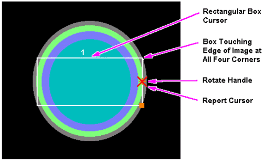

Operating Documentation
Direction 5133330-3, Rev# 14
Signa EXCITE HD 3.0T Service Methods
Module Version 1.0, Version Date 5/3/07
Operating Documentation |
| Required Persons | Preliminary Reqs | Procedure | Finalization |
|---|---|---|---|
| 1 | Not Applicable | 30 mins | Not Applicable |
| Item | Qty | Effectivity | Part# | Manufacturer | |
|---|---|---|---|---|---|
| Head SNR Sphere | 1 | - | 2359877 | - | |
| Head Loader | 1 | - | 2360031 | - | |
| Head Loader Positioner | 1 | - | 5110241 | - | |
| ||||
| Poison Hazard! | ||||
| The phantom contains Dimethyl Silicone fluid. DO NOT INGEST. Eye contact may cause minor irritation. | ||||
| If a leak or spill occurs, wipe up or absorb in inert material and place in container for disposal. Incineration or landfill is the recommended disposal method. |
| Condition | Reference | Effectivity |
|---|---|---|
No image artifacts | - | - |
At the operator workspace, select the scan icon in the desktop control panel.
If necessary, exit out of any previous exams by selecting [End Exam].
Click on [New Pt] and enter the following:
Id: geservice
Name: snr check
Weight (lb.): 111
| NOTE: | On the Patient Information screen, up to 32 characters can be typed in the Exam Description field as comments. On the Patient Position screen, up to 29 characters can be typed in the Series Description field as comments. (The comments are displayed on the Report Header Info screen.) |
| ||||
| Poison Hazard! | ||||
| The phantom contains Dimethyl Silicone fluid. DO NOT INGEST. Eye contact may cause minor irritation. | ||||
| If a leak or spill occurs, wipe up or absorb in inert material and place in container for disposal. Incineration or landfill is the recommended disposal method. |
Check the temperature indicator on the head SNR sphere.
Position SNR sphere in the Head Loader as shown in Illustration 1. Fasten the strap to the top of Head Loader to secure the SNR sphere inside the loader. Position the Head Loader on top of the Head TLT Loader Holder within the Quad Head Coil so the loader is centered and the loader's axial mark is at the center of the Head Coil window (see Illustration 2 for landmarking phantom).
Illustration 1: HEAD SNR SPHERE AND HEAD LOADER

Illustration 2: LANDMARKING HEAD SNR SPHERE

LANDMARK, then MOVE TO SCAN.
At the operator workspace, prepare the system for an SNR Check (Head, Axial) scan.
Click on [Autoview], just below the Autoview image display screen, to automatically display your images.
Click on [Save Series], then [Prepare to Scan].
Click on [Auto Prescan]. After the prescan, check the R1 value. If R1 does not equal 11, check for the problems listed next. Record R1, R2, TG, and system frequency values in Data Sheet 1.
Click on [Scan]. After the first scan is complete, click on [Scan] again (two back-to-back scans).
After the series #4 back-to-back scans are complete, click on [New Series].
At the operator workspace, prepare the system for an SNR Check (Head Sagittal) scan.
Click on [Auto Prescan]. After the prescan, check the R1 value. If R1 does not equal 11, check for the problems listed next. Record R1, R2, TG, and system frequency values in Data Sheet.
Click on [Scan]. After the first scan of series #5 is complete, click on [Scan] again (two back-to-back scans).
After the series #5 back-to-back scans are complete, click on [New Series].
At the operator workspace, prepare the system for an SNR Check (Head Coronal) scan.
Enter the anterior offset for the Scanning Range start/end location. Find offset as follows:
Click the  (Image Browser) icon. When the browser is displayed, click [Viewer].
Display the image of the axial scan (Series 1).
(Image Browser) icon. When the browser is displayed, click [Viewer].
Display the image of the axial scan (Series 1).
Select a rectangular cursor under [Measure]. Rotate the cursor box 90 degrees clockwise by dragging the rotation handle until the handle marker is placed on the display's right side. See Illustration 3.
Illustration 3: FINDING CENTER OF IMAGE - ROTATED BOX CURSOR

Adjust the rectangular cursor size, dragging the size/shape handle, so that all four corners touch the edge of the image.
| NOTE: | A horizontal rectangle provides more accuracy in the horizontal direction. |
Click [Measure], then select the (report cursor) tool. Click the rectangle created in Step 18.c, then place the report cursor on top of the rotation handle of the rectangular cursor box. Read the A/P location. See Illustration 4.
Illustration 4: FINDING CENTER OF IMAGE - REPORT CURSOR

Click the  (scan) icon. In the SCANNING RANGE area, enter the value obtained
in
Step 18.d for the A/P Start
and End values (anterior offset) of the coronal scan.
(scan) icon. In the SCANNING RANGE area, enter the value obtained
in
Step 18.d for the A/P Start
and End values (anterior offset) of the coronal scan.
Click on [Auto Prescan]. After prescan, check the R1 value. If R1 does not equal 11, refer to step 12 for items to check. Record R1, R2, TG, and system frequency values in Data Sheet 1.
Click on [Scan]. After the first scan of series #3 is complete, click on [Scan] again (two back-to-back scans).
For analysis, see SNR Image Analysis.
No finalization steps.